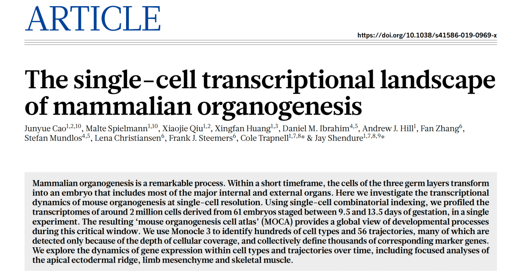
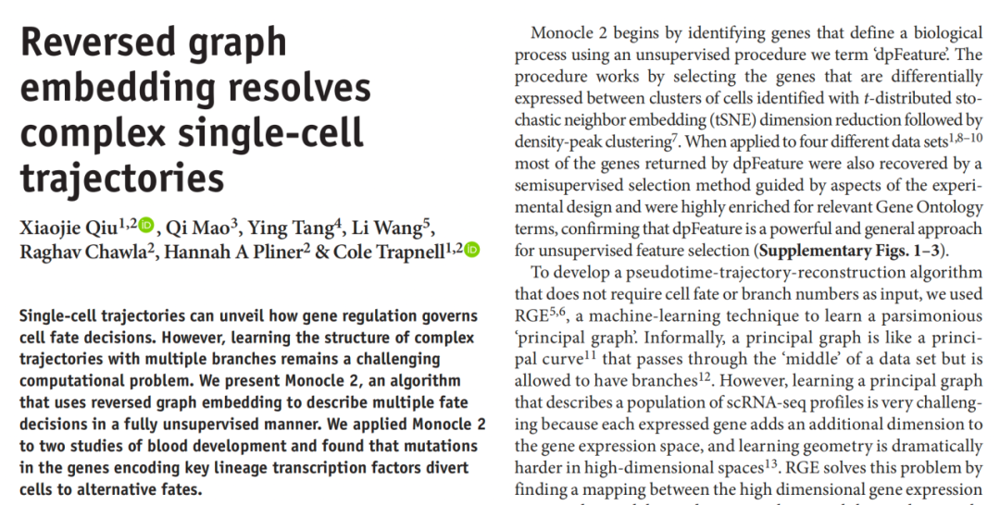
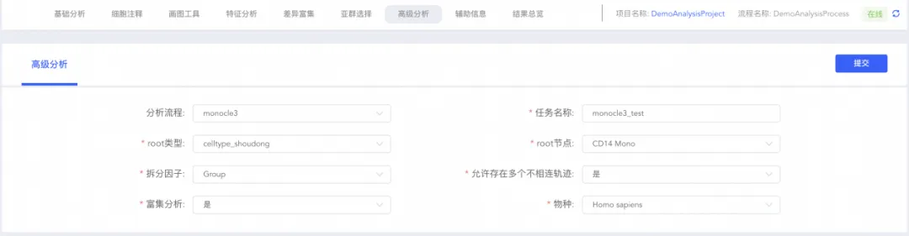
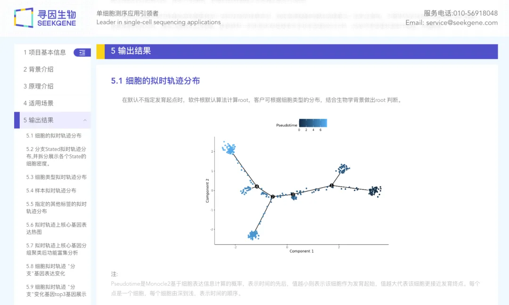
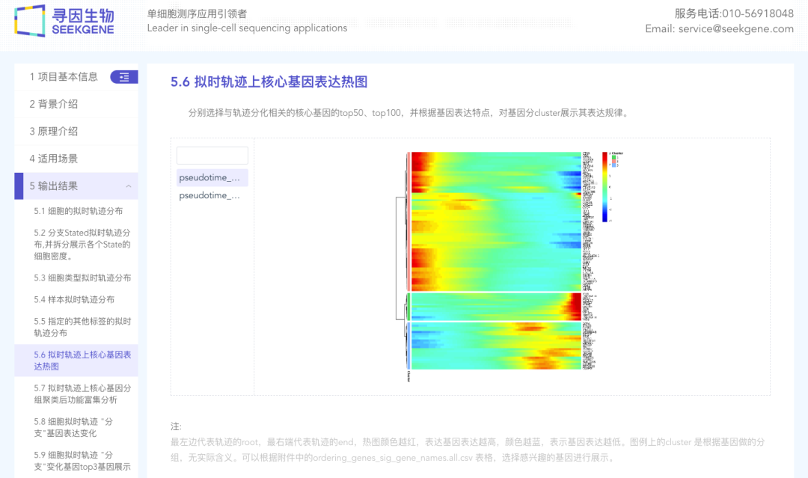
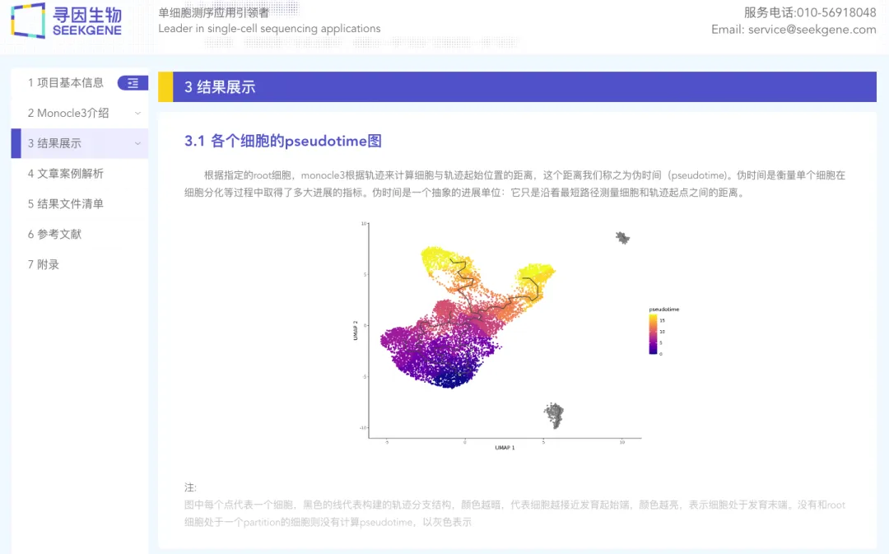
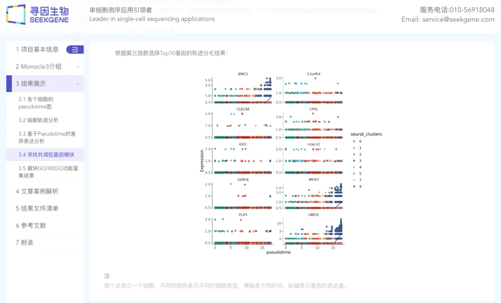

零代码单细胞| 拟时序分析
原文：https://mp.weixin.qq.com/s?__biz=MzAwMzIzOTk5OQ==&mid=2247510401&idx=6&sn=53179695312fbf69f8dddc8342c70cfa&chksm=9b3cd0d1ac4b59c73a03889267cf5140f0f27bd9decb13694bea8c8e62c260b07472c366ec12#rd 合集：单细胞云平台
导语 .
单细胞拟时序分析面临高维度和高复杂性的挑战，常常需要大规模计算资源和灵活的参数调整以满足分析需求。SeekSoul ® Online单细胞数据分析云平台凭借其强大的计算能力，为您提供了两种拟时序分析方法。 您可通过自主设置分析参数，快速推断细胞之间的演化过程 ，从而深入理解细胞在不同生物学过程中的行为和功能。
云平台访问链接：https://seeksoul.online/t_static/Biomamba/Biomamba.html
各位同学需要联系您的专属在线客服，获取demo数据后，进行操作学习。

第六讲：细胞发育，云平台在“指方向”
精华复现
版本多样，自主选择
云平台提供了Monocle2 和Monocle3 这两款分析细胞发育轨迹的软件，您可以根据自己的需求自主选择并进行切换。这两款软件通过分析基因表达调控的过程，推断细胞的演化轨迹，进而展示细胞间的分化或发育关系。


灵活配置参数，轻松应对需求
云平台根据软件特性及分析需求，设定独立参数，您可以灵活调整 ，以满足绝大部分分析需求。

海量资源，计算无限
云平台提供了强大的计算资源，无需担心内存不足等问题，可确保分析任务流畅运行。任务完成后，可提供详细的结果报告。报告中包含从拟时间结果到决定细胞分化基因的热图再到基因的富集结果等。 让您专注于数据的解读，为您的研究带来突破性的发现。
 |
 |
|---|---|
 |
 |